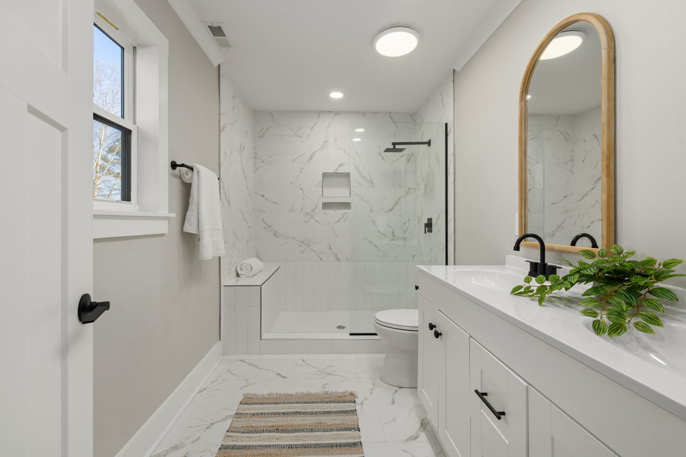
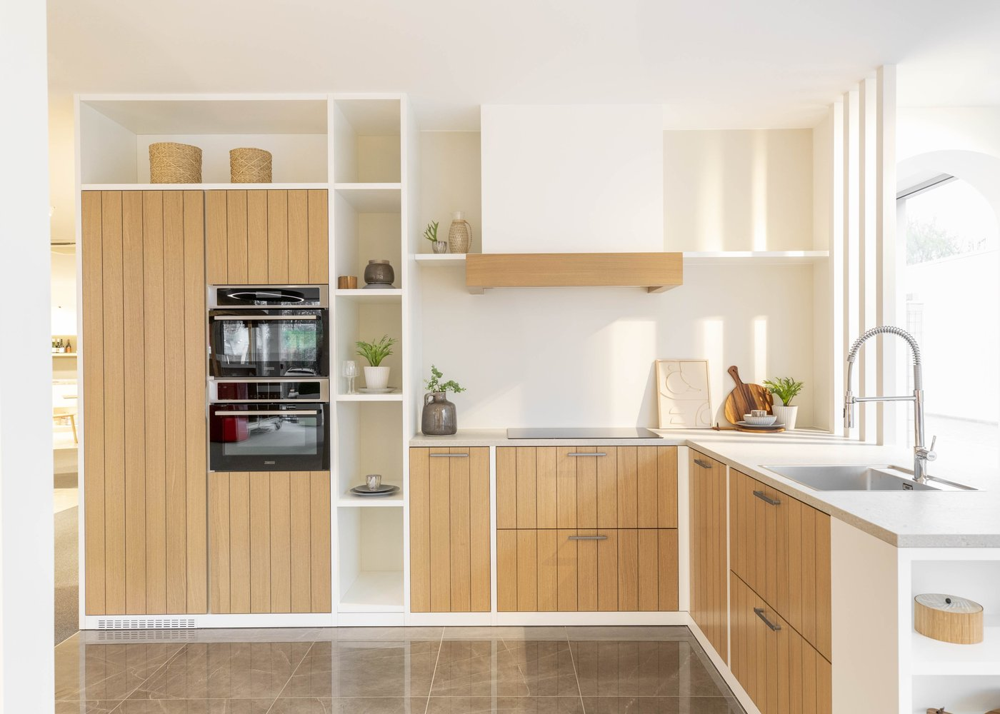
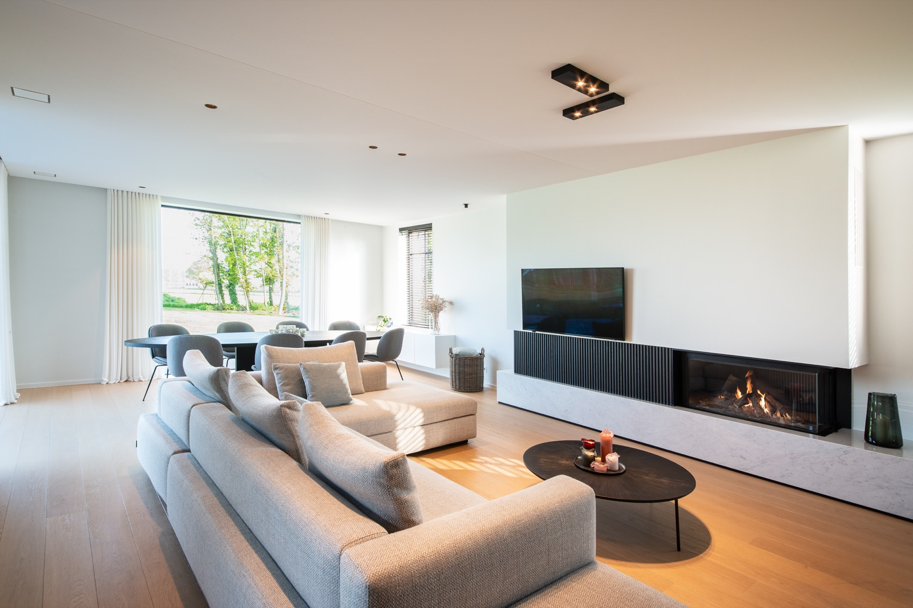
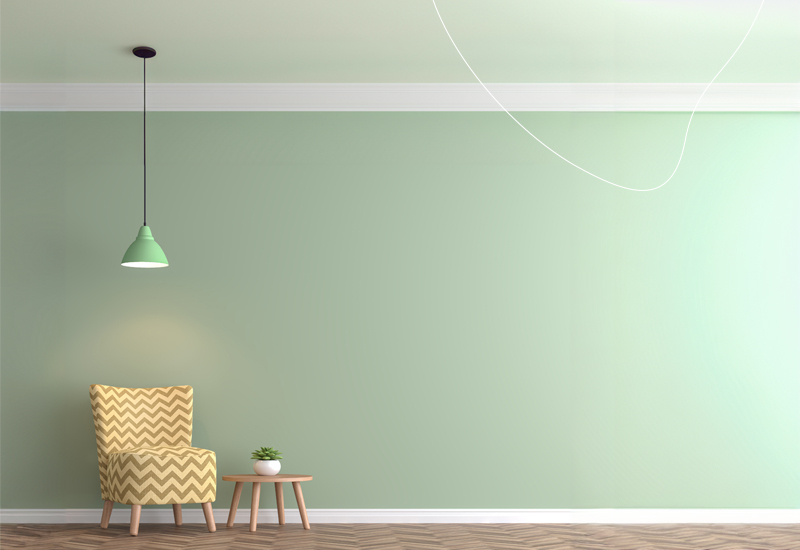
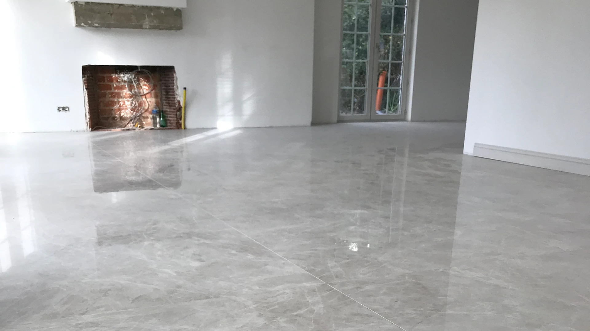

Bekijk enkele van onze succesvolle projecten





"KASO Renovatie heeft mijn badkamer in een droomruimte omgetoverd. Professioneel team, schone werkplaats en uitmuntende afwerking!"
"Zeer tevreden met de keukenrenovatie. Jamal en zijn team waren altijd betrouwbaar en werkten zorgvuldig. Aanrader!"
"Mijn hele huis is gerenoveerd door KASO. Kwaliteit, puntualiteit en service - alles perfect. Hartelijk dank!"